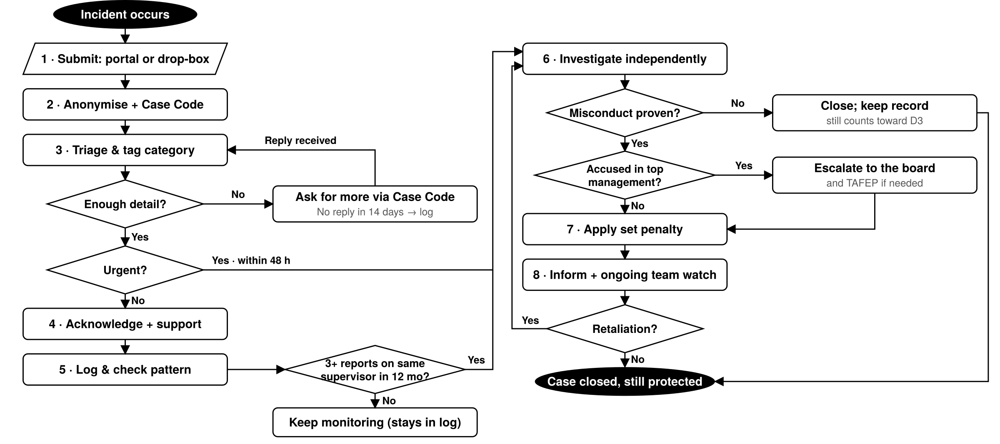

3 in 10
workers who were sexually harassed at work made an official report.
AWARE–Ipsos, 2021
For employees in Singapore
SpeakSafe is an independent, anonymous reporting system for workplace bullying and abuse of power. Reports go to a neutral third party, never your boss or internal HR.
The problem
3 in 10
workers who were sexually harassed at work made an official report.
AWARE–Ipsos, 2021
24%
of Singapore employees said they were bullied at work in the past year, against a 15% average across 14 countries.
Kantar Inclusion Index, 2019
2,168
wrongful dismissal claims in 2025, up from 1,720 in 2024.
MOM & TADM, 2026
The legal gap: the Workplace Fairness Act covers discrimination, not general bullying, and only takes effect at the end of 2027. SpeakSafe covers bullying of any kind, starting now.
Our solution
SpeakSafe combines our ideas from brainstorming, SCAMPER and computational thinking into one system that prevents abuse, handles reports fairly and protects the people who speak up.
An encrypted online portal, plus camera-free drop-boxes for frontline and shift workers. Forms in English, Chinese, Malay and Tamil.
No names, staff IDs or IP addresses. A Case Reference Code lets you track your case and add evidence later.
Reports go to an external investigator, never your line manager or internal HR.
Urgent cases are investigated within 48 hours. Three or more reports on one supervisor in 12 months trigger an audit.
Set penalties for proven abuse. Cases about top management go to the board, so no one decides their own penalty.
Your team is watched for sudden dismissals, pay cuts or transfers for as long as you work there.
Every manager completes yearly anti-bullying training.
How it works
Report through the online portal or a camera-free drop-box.
All identifiers are removed and you get a Case Reference Code.
Tagged as Physical Safety, Psychological Bullying or Authority Abuse.
Enough detail? No → we ask through your code. Urgent? Yes → investigation within 48 hours.
We confirm we received your report and share support options.
Anonymised details are stored.
3+ reports on one supervisor in 12 months? Yes → formal audit.
An independent third party gathers evidence. Your name is never revealed.
Proven? No → case closed, record kept.
Warning, coaching, reassignment or termination, matched to severity.
Top management? Yes → escalated to the board or TAFEP.
You are told the outcome, and your team stays protected with no time limit.
Retaliation? Yes → new urgent case.

Make a report (demo)
Do not include your name or anyone's real details in this demo. In an emergency, call 999.
Track a case (demo)
Questions
No. Reports go to an independent third party, not your manager or HR. We store no names, staff IDs or IP addresses, and drop-box forms use tick-boxes so handwriting can't identify you.
The investigator talks to you through your Case Reference Code, and interviews witnesses and checks records without saying who reported.
One report alone never leads to a penalty. Misconduct must be proven by an independent investigation. Three reports about one supervisor only start a review.
The third party escalates the case to the board of directors (and TAFEP if needed), so no one decides their own penalty.
Your whole team stays protected with no time limit, even after your case closes. Any dismissal, pay cut, transfer or poor appraisal needs a documented reason. Signs of retaliation open a new urgent case.
Yes. Camera-free drop-boxes are placed in private spots and emptied twice a week. Each box has a hotline and QR code for urgent cases.